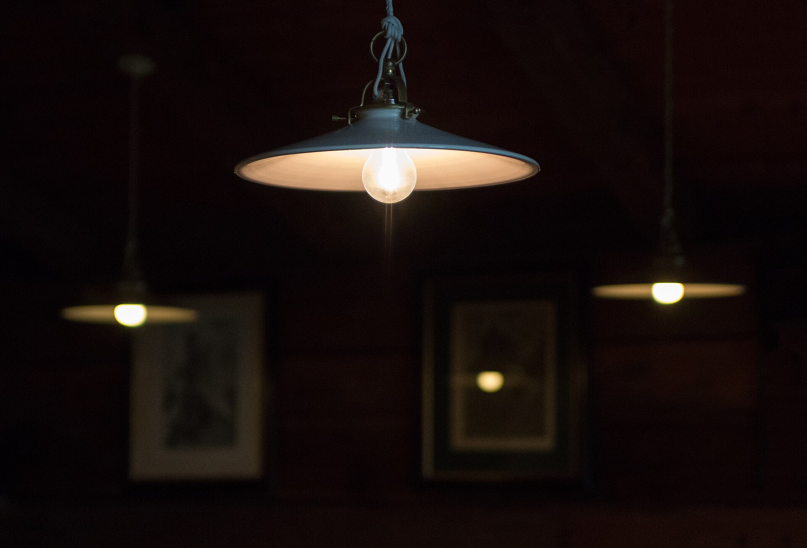
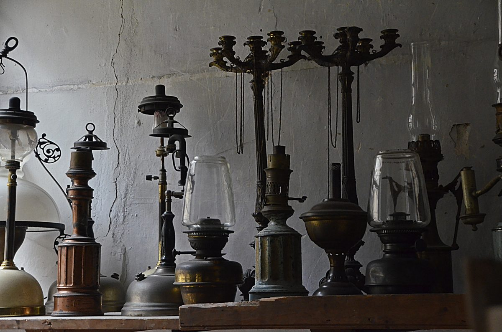
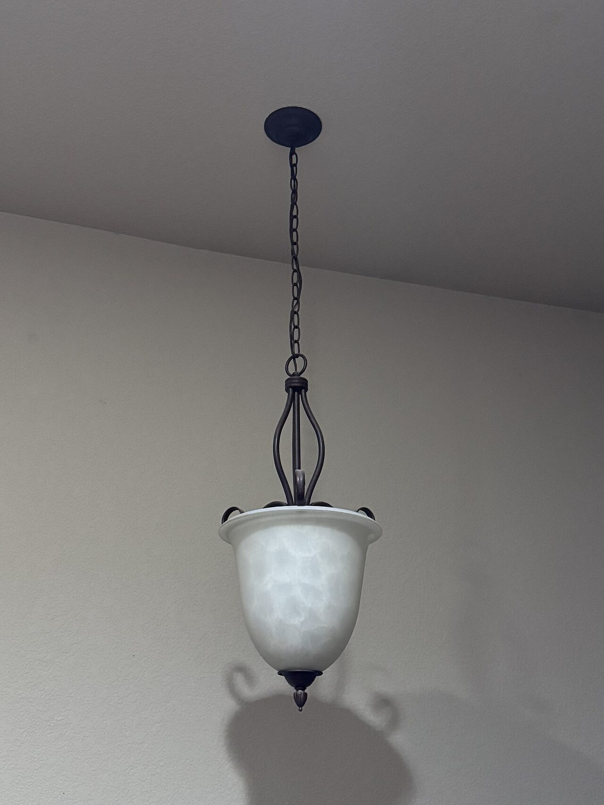
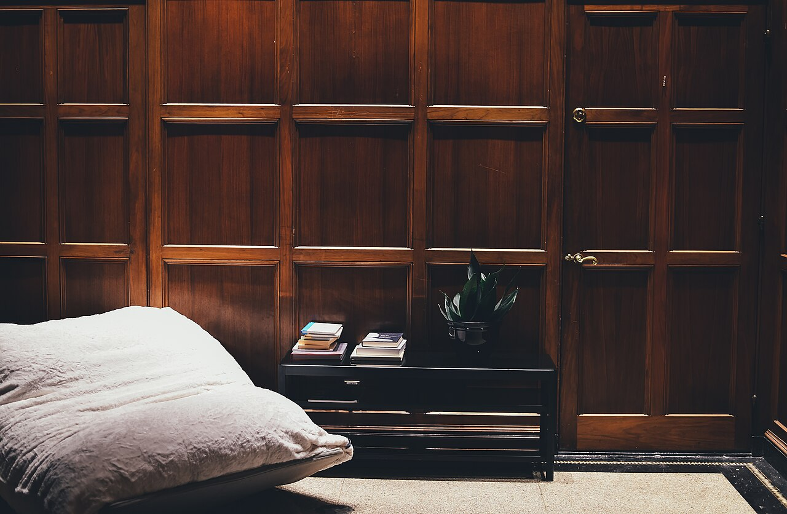
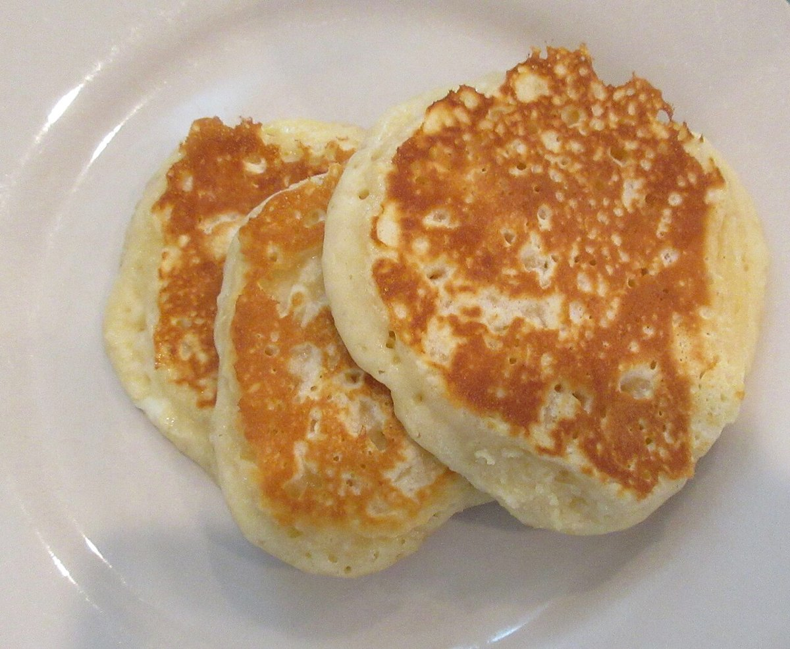
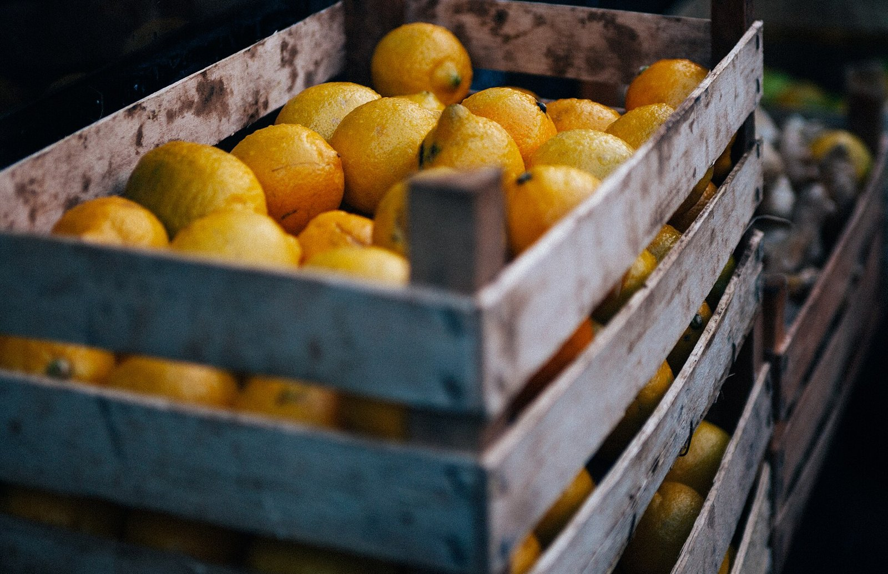
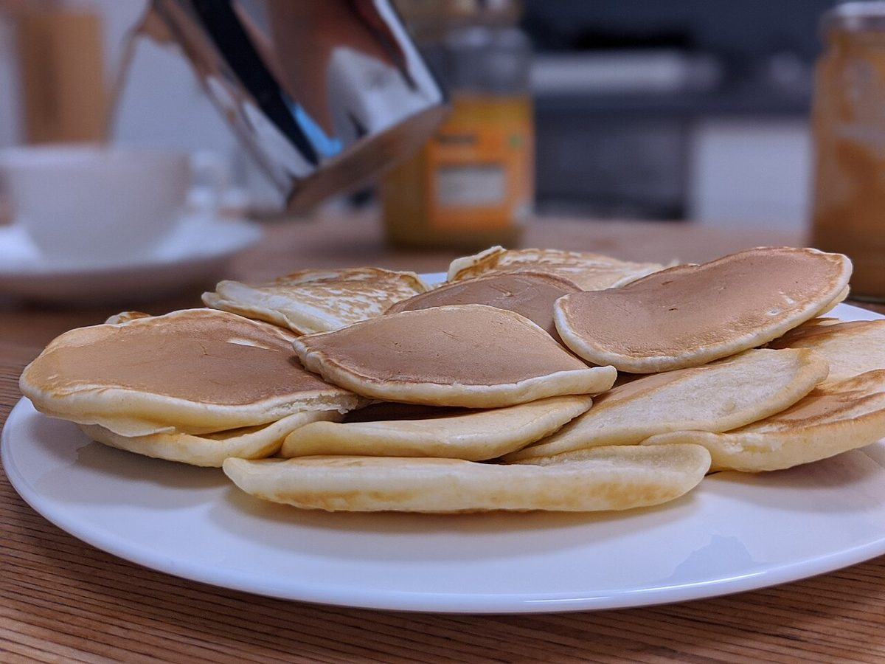
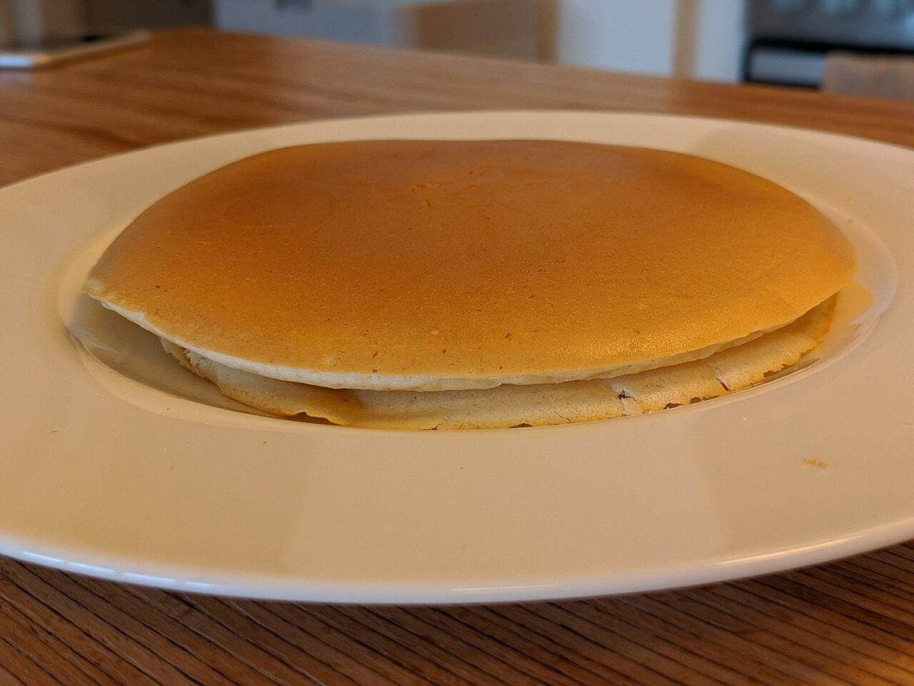

ABOUTお店について
THE LAMP ROOM CAFE は、北海道室蘭市寿町の室蘭ダイハツに併設されたカフェです。公式Instagramの紹介によると、もとは「SOCOTRA CAFE」だったお店がリニューアルし、室蘭ダイハツに併設する形で移転、2022年12月21日にオープンしたとされています(Instagramの紹介文を検索結果で確認。最新情報はInstagramでご確認ください)。
口コミサイトでは、器やインテリアにオーナーのこだわりを感じるお店、木のぬくもりのある落ち着いた店内と紹介されています。ダイハツへのご用がなくても立ち寄れるカフェとして親しまれているようです。
店名の「ランプ」に込められた意味は確認できていません。このページの「ひとつ灯りのともる小さな部屋」という見せ方は、制作側のイメージです。




MENUメニュー
掲載サイトで紹介されている主な品です。内容・価格・提供状況は準備中のため、最新はInstagramでご確認ください。

パンケーキ
ベーコンキムチクリームパンケーキなどの写真が掲載されています。

チーズケーキ
かぼちゃのチーズケーキが紹介されています。価格は準備中。

自家製レモンスカッシュ
最近の特集で紹介されています。価格は準備中。

オリジナルブレンドコーヒー
THE LAMP ROOM CAFE BLENDとして紹介されています。

ラテ各種
数種類のラテがあると紹介されています。
ナポリタンほか
ナポリタンなどのフードも紹介されています。詳細は準備中。



掲載写真はフリー素材のイメージで、店舗の実際の様子・実際のメニューではありません。
VOICE口コミ
車の点検を待つあいだに寄りました。木の落ち着いた雰囲気で、待ち時間があっという間でした。
パンケーキとコーヒーでゆっくりできました。器もかわいくて、また来たいと思いました。
ダイハツに用がなくても入りやすいお店です。午後のひと休みにちょうどいい空間でした。
上記は制作側が作成したイメージ例であり、実在のお客様の声ではありません。
ACCESSアクセス・店舗情報
- 店名
- THE LAMP ROOM CAFE
- 住所
- 〒050-0082 北海道室蘭市寿町3丁目15-4 室蘭ダイハツ内
- 電話
- 準備中
- 営業時間
- 準備中
- 定休日
- 準備中
- @the_lamp_room_cafe
PHOTO CREDITS写真クレジット
このページの写真はフリー素材(Wikimedia Commons等)のイメージで、店舗の実際の様子ではありません。
- 暗がりに灯るペンダントライト「Warm light in the dining room (Unsplash)」 / eberhard grossgasteiger / CC0 1.0 / images/lamp-warm.jpg
- 古いランプの並び「Collection of antique lamps (Unsplash)」 / Zbysiu Rodak / CC0 1.0 / images/lamps.jpg
- 吊り下げ型のランプ「Inverted pendant light」 / JimboGimmeJoe / CC BY 4.0 / images/pendant.jpg
- お皿のパンケーキ「Pancakes on plate, July 2023」 / Infrogmation of New Orleans / CC BY-SA 4.0 / images/pancake.jpg
- テーブルのパンケーキ「Pancakes on table」 / Shisma / CC BY 4.0 / images/pancake-table.jpg
- 皿にのったパンケーキ「Pancake on plate」 / Shisma / CC BY 4.0 / images/pancake-plate.jpg
- 木のテーブルのコーヒー「The cup of coffee on a wooden table (47939081677)」 / Artem Beliaikin / CC BY 2.0 / images/latte-wood.jpg
- 木の壁板のある部屋「Coffee table by a wooden wall (Unsplash)」 / Crew / CC0 1.0 / images/wood-panel.jpg
- ラテアートのカップ「Cup saucer and coffee art (Unsplash)」 / freddie marriage / CC0 1.0 / images/latte-art.jpg
- 木箱のレモン「Lemons (Unsplash)」 / Clem Onojeghuo / CC0 1.0 / images/lemon.jpg
- チーズケーキ「Basque cheesecake(Wikimedia Commons)」 / Andy Li / CC0 1.0 / images/cheesecake.jpg
- コーヒー豆「Beans (42182293175)」 / Skitterphoto / CC0 1.0 / images/beans-close.jpg
- コーヒー豆「Coffee Beans」 / fireskystudios.com / CC0 1.0 / images/beans-dark.jpg